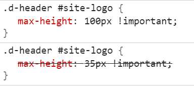

I really liked the theme shared way back in 2016 by @jsthon. They haven’t been around since it was initially posted, so I’ve updated it, expanded it, and added it to github.
Disable the background image and tiling settings above.
This theme has three settings:
A field to add your own background image
An option to tile it
And an option to remove both of the above options
If you disable the tile option, the image will be set to background-size: cover, and your browser will scale your image to proportionately cover the full background. For example:
Am I the only one with this problem using this theme ? When I test in google page speed gets 99% but the page doesn’t load, so the results are misleading.
What is it because google can’t see - it doesn’t load this page?
Hmm, yeah I’m seeing the same issue… it seems like something in the theme is interfering with the version of Discourse we serve Google. I’ll investigate. Looks like it might be the same issue messing with the print view reported above.
I’m trying to make Graceful much wider on desktop. Tried this:
#main-outlet {
width: auto;
max-width: 1210px; /* This makes the container as wide as the logo/header controls */
}
and this CSS made the overall container wider; and the suggested topics at the bottom span the page nicely but the overall width of the posts in the topics are too narrow (for my wide version).
Tried inspector, and a number of elements but not being a expert, could not get the width of the topics / posts to match the width of #main-outlet .
Do you mind to help me out?
Thanks
Also, tried this:
#main-outlet {
width: auto;
max-width: 80%;
}
But cannot the the posts width to match the container width:
Not very graceful but at least it’s working ‘ok’ with large blocks of code, it is easier to read on the big developers screen.
Would be nice to show the .timeline-container but I could not get it to work overriding the class as suggested, surely because of my not well-developed CSS skills:
I am loving this theme so far. Many thanks for sharing it with us!
I’ve noticed on mobile view the category color bars disappear. Is this on purpose and is there a way to restore it?
Also, is there a way to turn off the background if a category has a background set? It seems to work okay but when scrolling on long posts the screen gets jerky and you can glimpse the theme set background.
…but it doesn’t show the specific category color, just a white bar. How do I get it to show the proper category color? I know it has something to do with category color variables but I can’t seem to find reference to it.
I’m a newb when it comes to CSS and such so I may be doing something wrong.
I must be dense, but I can’t get the logo to change size with a theme component created to adjust CSS. I can change the overall header height, but the logo remains stubbornly the same. This CSS seems to knock out any changes I attempt to make:
.d-header #site-logo {
max-height: 35px !important;
}
According to Chrome Inspector it’s coming from: desktop-scss-graceful.scss
Changing logo size works fine with the default theme and, as I said, changing header height works with Graceful, just not the logo…
Yeah the !important overrides any other CSS without an !important… I don’t recall why it’s there but I should look into removing it. Does it work if you include an important with your own CSS?
.d-header #site-logo {
max-height: 50px !important; // <-- your custom height here
}
Thanks for the quick reply! I had actually noticed the !important and tried adding it to mine, to no avail. The odd thing is, trying it now, when I save that change and it refreshes, for a moment it appears the right size, then it shrinks down again. And in the Inspector it appears to be doing the right thing:

At least in the sense that the 35px is disabled. But the order seems funny, at the least. And in any case it’s still not working. Strange.
I’m putting this in Common CSS for what it’s worth…
Update: found it! It’s :
.d-header #site-logo {
height: 2.667em;
}
in header.scss!
And if I add my own height: with !important it works!
OK, next question, which I think is specific to this theme. I’m using it as a basis to make a sort of personal “blog” (actually a digital garden, but that’s kind of an obscure term). Since basically every post will be authored by me, I want to remove or reduce the prominence of certain authorial visual elements, mainly avatars, and especially in the topic lists on the front page and in categories. Outlined in red is what I want to hide, if possible:
Using Chrome dev tools to find the classes/IDs and attempt to hide them (note to self: do not hide ember-view )
I am also looking into and experimenting with various components to show the first image in a topic as a thumbnail. If I could replace those avatars with little thumbnails of first image in the topic, that’d be great too. But hiding them is a good start.
I would like to start by saying thanks for such a great theme. and Special thanks for giving us the option to add a custom background image that was very important for us.
I am however running into a bit of a bump while trying to properly set up the header for the forums.
a- I am trying to increase the size of the logo top left corner.
b- I am trying to change the header color to match with the logo background as for some reason I am not sure how to get discourse to accept a .png image that will go along any header color. Without discourse changing it to a jpg and adding automatically adding the background.
The image below will show what I have now
I know there were a few mentions above about this and creating a custom component to override the CSS however I am not very familiar with CSS and I am not sure what lines to add where in my custom component I created.
I’ve just made an update that should fix the recently mentioned color issues (mismatched background, dark mode), thanks for reporting the issues everyone!
I’m not certain this is a theme change/issue, but recently when I updated Discourse and all my plugins, my front page with Topic List Thumbnails Theme Component installed went from being 3 columns to 2 columns:
If I use Chrome Inspector and slightly increase the width of the main container, it fixes it. So I’m guessing it may have to do with this recent commit which has some width changes in it:
For now I am addressing it by overriding the width in CSS with main-outlet, but I’m not sure if there are any unintended consequences, or if this is the best way to address it. So this is not necessarily to say that anything needs to be changed, but to mention it did affect layout on my site in this scenario, and to ask if there is any other approach I should be taking to get my desired result (3 column masonry layout). I’ve already fixed the issue so if that should take care of it long-term I’m happy to leave it.
Small bug report: the latest version of this theme seems to truncate the forum title when viewed on a small mobile device like an iPhone, as can be seen on https://forums.ankiweb.net/
Full-screen chat appears to be semi-broken on the Graceful theme, with both the main window and chat window having a scrollbar. I haven’t been able to recreate this issue with other themes, so it appears to be specific to Graceful.
The updated usercards are an experimental theme component, and it looks like it just wasn’t added to all themes here on Meta… I added it to that one if you’re curious.
Important detail, we just want to change the color of the main background, not the background of the areas with text. This is why we can’t use the Color Palette values directly (unless I have missed something).
Still trying to change the background for the default (light) mode while keeping the dark background for dark mode.
Even if we want a plain color for the light background, anything we have tried with CSS adds the same color to the background in dark mode.
This is why we are trying with an image instead. When the background image is set to default, the stock Graceful image background is used for light, but for dark mode there is a dark background. It would be great if we could add a custom image that would be used only the light mode as well, but when we try, the same image is used in dark mode. Because the background image is bright and fitting for the light mode, it ruins dark mode.
@piffy Thank you very much. This is a decent workaround indeed.
I got lost in the math of calculating a SVG number that with a 20% opacity will, result in #FAF0FC but this gets close enough to my eyes, and dark mode is dark. Phew!
// Background color instead of Graceful background image
.background-container {
background: rgb(200 190 192 / 20%);
}
Has anyone found a way to properly adjust the width of the forum with this theme?
My CSS changes do not seem to be having an effect, and Canapin’s custom width component works fine on the default theme but seems to have no effect on Graceful.
By default the forum is really narrow and it would be great to be able to change this
The Canapin’s TC works for me on this theme.
This TC sets --d-max-width and --topic-body-width CSS variables.
You might have another TC or customizations that overwrites these values.
You can try manually, for example:
body {
--d-max-width: 1500px;
--topic-body-width: 1500px;
}
as an example, the change to padding, background etc are applied correctly, but the actual text color itself is ignored and remains the default yellow. Is there a different thing I should be addressing to change that? The yellow is extremely hard to read against a white background by default.
On Mobile, the width of the forum is now slightly more than the screen should be, is there a way to have it stay at max 100% width on mobile and not go over, but without undoing the width increase for desktop users?
I’m having the same issue @Solari was above in that the color bars on mobile are not present. I tried using the CSS code suggested in response but that didn’t seem to resolve the issue, did anyone figure out how to get category color bars back on mobile?

Hosted by us? Themes are available to use on our Standard, Business, and Enterprise plans.

{kind=link}
{kind=link}
{kind=link}
{kind=link}
{kind=link}
{kind=link}
{kind=link}
{kind=link}
{kind=link}
{kind=link}
{kind=link}
{kind=link}